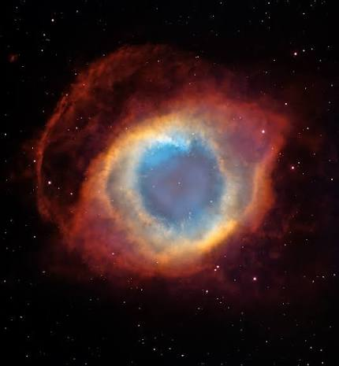

El universo tiene muchos colores que podemos observar en las estrellas y nebulosas.
Los colores dependen de la temperatura de las estrellas y de los gases que hay en el espacio.
Las nebulosas pueden tener tonos rosas, azules, morados y rojos.
Gracias a los telescopios podemos descubrir la belleza que existe mas alla de nuestro planeta.